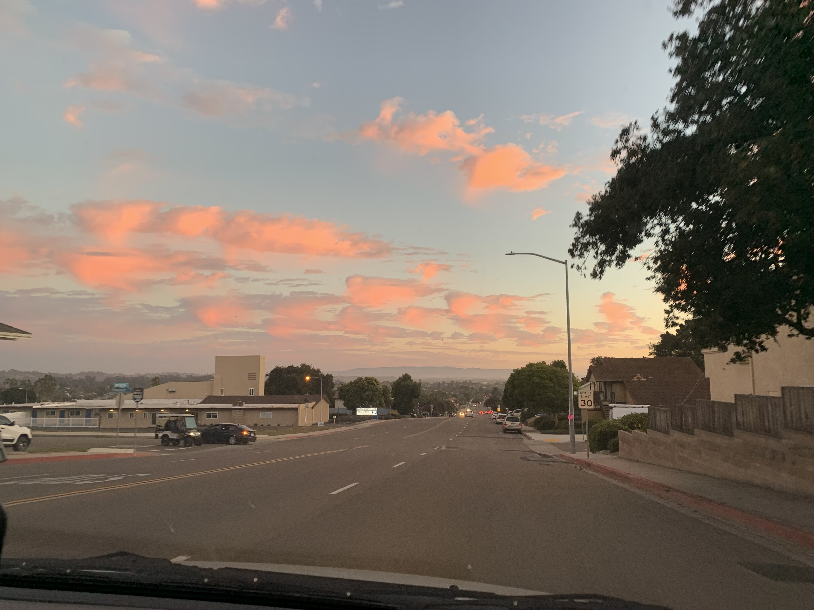

Blog
Another day, another sunset
10-19-2023

A friend of mine calls the sunsets in San Luis Obispo slosets, which I've recently adopted into my own vocabulary.
Enjoy this photo of the sunset highlighting the cascading clouds near Pismo.